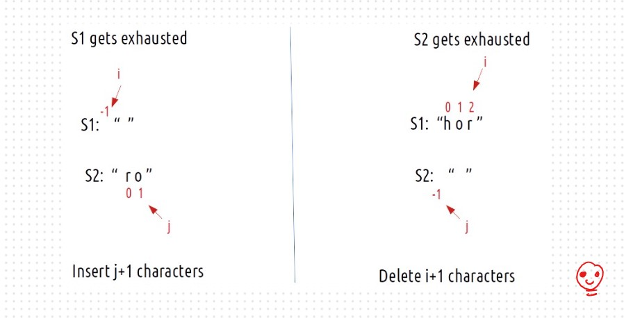
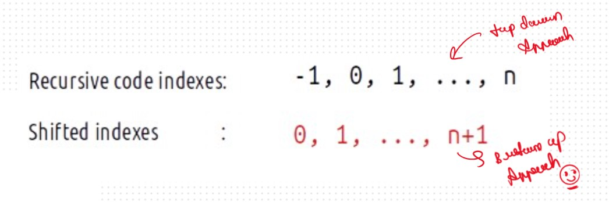

JB TAK FODEGA NHI .... TB TK CHODEGA NHI .... (MAANG)


DPL33 Edit Distance üî•
Given two strings word1 and word2, return the minimum number of operations required to convert word1
to word2.
You have the following three operations permitted on a word:
Again Very Famus Probelm Based on the DP on String, Basically we have a 3 Operation and our task to Convert S1 to S2 with the Minimum Number of the Operations
Insertaion and Deletion we learned in the DPL30, but in this Question we have one more
operation that is Replacement, that makes a Bit Harder Problem as Compare to the DPL30.
Now the Question is is Every Time Possible to Make A Sting1 to String2 and the Answer is
Yes who ?
But the Our Task is Minimum Operation To Make A S1 == S2
Hoe To Solved this Problem
For every index of string S1, we have three options to match that index with string S2, i.e replace
the character, remove the character or insert some character at that index. Therefore, we can think in
terms of string matching path as we have done already in previous questions DPL32.
As there is no uniformity in data, there is no other way to find out than to try out all possible
ways. To do so we will need to use recursion.
Recursice Approch
Steps to form the Recursive SolutionStep 1: Express the problem in terms of indexes.
Step 2: Try out all possible choices at a given index.
Now, i and j represent two characters from strings S1 and S2 respectively. There are only two options that make sense: either the characters represented by i and j match or they don’t match.
Case 1: When the characters matchS1[i] == S2[j], If this is true, now as the characters at i and j match, we would not want to do any operations to make them match, so we will just decrement both i and j by 1 and recursively find the answer for the remaining string portion. We return 0+f(i-1,j-1). The following figure makes it clear.
Case 2: When the characters don’t match
- Case1: Inserting a character
- Case2: Deleting a character
- Case3: Replacing a character
Consider this example
Now if we have to match the strings by insertions, what would we do?:
Now, the number of operations we did were only 1 (inserting s at index 5) but do we need to really insert the ‘s’ at index 5 and modify the string? The answer is simply NO. As we see that inserting a character (here ‘s’ at index 5), we will eventually get to the third step. So we can just return 1+ f(i,j-1) as i remains there only after insertion and j decrements by 1. We can say that we have hypothetically inserted character s.
So the Case 1 is fro the Inserting a character: 1 + f(i,j-1) Case 2: Deleting a character
Consider the same example

We can simply delete the character at index 4 and check from the next index.
Now, j remains at its original index and we decrement i by 1. We perform 1 operation, therefore we
will recursively call 1 + f(i-1,j).
So the Case 2 is fro the Deleting a character: 1 + f(i-1,j)
Consider the same example
If we replace the character ‘e’ at index 4 of S1 with ‘s’, we have matched both the characters
ourselves. We again hit the case of character matching, therefore we decrement both i and j by
1. As the number of operations performed is 1, we will return 1+f(i-1,j-1).
To summarise, these are the three choices we have in case characters don’t match
Base Cases We are reducing i and j in our recursive relation, there can be two possibilities, either i becomes -1 or j becomes -1., i,e we exhaust either S1 or S2 respectively.

The final pseudocode after steps 1, 2, and 3
.png)
.png)
Sb Mai He Kru ...
Khud Bhi Kr le Khuch ..... Nalayk
Time & Space Complexity
Time Complexity: O(2^N)Reason: Exponential Time we find out the all the Possible Path
Space Complexity: O(N)
Reason: We are using a recursion stack space(O(N))
Memoization Approch
If we Observe in the recursion tree, we will observe a many number of overlapping subproblems. Therefore the recursive solution can be memoized for to reduce the time complexity.
Steps to convert Recursive code to memoization solution:.png)
.png)
Sb Mai He Kru ...
Khud Bhi Kr le Khuch ..... Nalayk
Time & Space Complexity
Time Complexity:O(N*M)Reason: There are N*M states therefore at max ‘N*M’ new problems will be solved.
Space Complexity: O(N*M) + O(N+M)
Reason: We are using a recursion stack space(O(N+M)) and a 2D array ( O(N*M)).
Tabulation Approch
Tabulation is a ‘bottom-up’ approach where we start from the base case and reach the final answer that we want and Memoization is the Top-down Approch.In Tabulation Approch We Just Creat a DP Array Same as Memoization and Simply Convert the Recurance Relation into the form of the Looping
Steps to convert Recursive Solution to Tabulation one.

.png)
.png)
Sb Mai He Kru ...
Khud Bhi Kr le Khuch ..... Nalayk
Time & Space Complexity
Time Complexity: O(N*M)Reason:There are 2 nested loops
Space Complexity: O(N*M)
Reason: We are using an external array of size ‘N*M’. Stack Space is eliminated.
Space Optimization
If we closelly Observed if any Tabulation Approch we used the Some Limited Stuff like: dp[i][j] = min(dp[i-1][j-1],dp[i-1][j],dp[i][j-1]) for the finding the our ans then definetly here Spaced Optimization is Possible in that types of Problems. Always Remember
Golden Rule
.png)
.png)
Sb Mai He Kru ...
Khud Bhi Kr le Khuch ..... Nalayk
Time & Space Complexity
Time Complexity: O(N*M)Reason: There are three 2 nested loops
Space Complexity: O(W)
Reason: We are using an external array of size ‘M+1’ to store only one row.